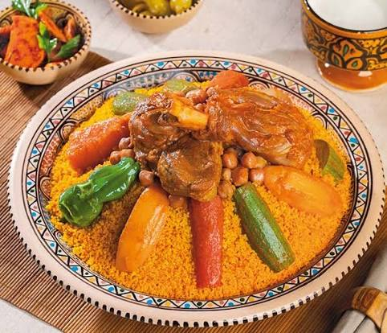
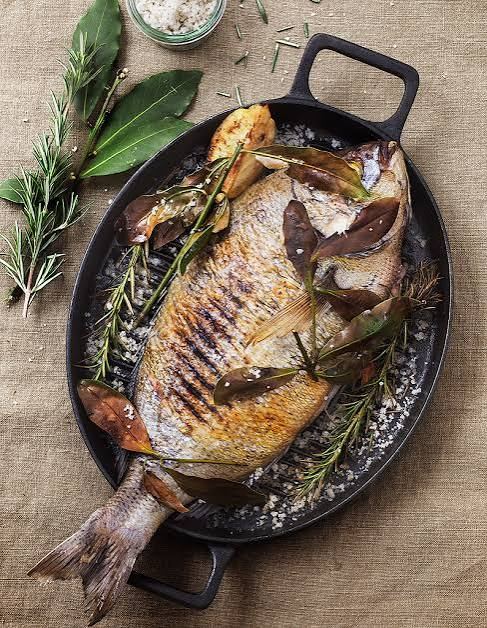
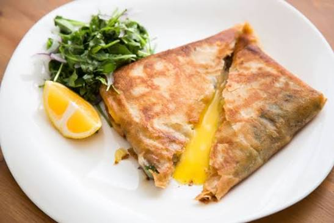

Couscous Royal a l'Agneau

Semoule fine roulee a la main, viande d'agneau fondante, pois chiches, legumes du marche et sauce epicee maison. Prix : 32 DT.
Commander / Reserver
Semoule fine roulee a la main, viande d'agneau fondante, pois chiches, legumes du marche et sauce epicee maison. Prix : 32 DT.
Commander / Reserver
Daurade fraiche du jour marinee au citron et thym, accompagnee de salade mechouia et de pommes de terre sautees. Prix : 36 DT.
Commander / Reserver
Feuille de malsouka croustillante garnie de thon entier, oeuf fermier coulant, capres, persil frais et fromage. Prix : 9 DT.
Commander / Reserver